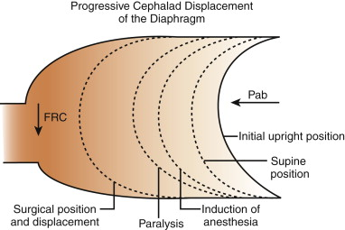
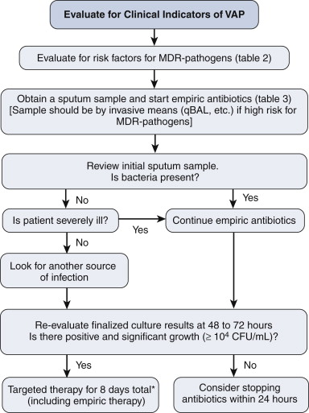

Respiratory
Failure
(Prevention,
Assessment,
Treatment)
Key Points
Assess resp function in all patients and use simple measures
liberally.
Routine clinical assessment detects at-risk patients.
Instigate appropriate treatment and target cause
ABGs critical.
Arrange safe transfer
Introduction
Immediate management
Patient assessment
- stable pt : the daily plan
Managing resp failure
- CPAP
- BiPAP
- Ventilation.
Weaning from Ventilation
Introduction
Commonest reason for ICU admission is airway / ventilatory care.
- early recognition and prevention is vital
Progressive displacement of the diaphragm in surgery

Alteration of consciousness is another important cause
- leads to loss of airway control
- decreases protective reflexes
--> increases risk of aspiration
- commonest cause in a surgical pt is hypoxia or hypercapnia
Three classes of
respiratory failure
i) acute fall in functional residual capacity (amount
of air left in lung at end of normal expiration)
- eg acute post-op atelectasis, sputum retention, pneumonia,
depression of respiration, trauma to chest wall.
ii) acute fall in
effective lung volume with pulmonary vascular dysfunction
- eg LVF, pulmonary hypertension, embolism, neurogenic pulmonary
oedema, ARDs.
iii) airflow obstruction
- states of increased lung volume, eg COPD, asthma.
Definition
of resp failure
ABG Criteria:
PaO2 < 8kPa
- (7.5mmHg = 1kPa, so 60mmHg)
or PaCO2 >7kPA
- (52.5mmHg)
Type I: hypoxia alone
Type II: hypoxia and
hypercapnia
Immediate
Assessment & Management
Signs of respiratory failure:
- dyspnoea, tachypnoea, apnoea
- unable to speak in full sentences
- accessory muscle use
- central cyanosis
- sweaty and tachycardic
- decreased LOC.
Do not worry about CO2 retention if a patient needs the oxygen.
- when stable, reduce to the minimal required amount of O2.
Management
Airway
Oxygenate
Pulse oximetry
- differing light absorption between oxygenated and reduced
haemoglobin blood
- 94% generally corresponds to about PO2 60 mmHg (8kPA), so aim
above that.
- impeded by shivering, nail varnish / dirt, arrhythmia, profound
anaemia, bright lights, Sats <70%, peripheral vasoconstriction
Full
Patient Assessment
As for Initial Assessment Card.
Chart review
History and physical
Check available results
- correct anaemia; consider if Hb<100 (seems too high)
- but don't overtransfuse / overload
ABG
CXR.
Tips:
- cardiac and respiratory variables are inseparable.
- remember radiographic changes
often lag behind clinical changes.
- preop spirometry is
important.
- sputum samples are
important as infection is the most common cause of respiratory
failure.
Stable
Patients : The Daily Plan
Consider respiratory function in every pt to predict problems.
- prescribe O2
- prescribe physiotherapy for at risk patients
- this includes mobilizing, breathing exercises, suction.
- monitor clinical signs, sats, ABGs
- communicate with nurses frequency for obs.
- ensure meticulous fluid balance and microbio sampling.
Consider neb saline to loosen secretions
- treat wheeze with neb salbutamol / ipratropium
Set PACE / ALS criteria
The importance of examining a chest routinely and instituting
simple prevention cannot be over-emphasised.
- preventative techniques include:
--> chest physiotherapy,
nebulised saline, monitored humidified O2, analgesia and sputum
culture, reassess.
Management
of Respiratory Failure
Stepwise Support:
Start simple and increase as needed.
--> high flow 02
--> CPAP
--> NIV - non-invasive ventilation
--> intubation and ventilation
--> PEEP and recruitment
--> Adjunctive therapies.
Oxygen
Should be humidified, else thickens secretions and promotes sputum
retention.
- Hudson mask, don't do less than 4-5L/min else CO2
accumulates.
- Venturi mask for CO2 retainers.
- FIO2 = (FlowX10)-10 between 5-8L/min
- or up to 90% with a reservoir bag.
Prevention
Nebulised 0.9% saline & bronchodilators if indicated
Regular respiratory physio treatment
Treating the Cause
Both supportive and definitive treatments.
- antibiotics, physio, diuretics, bronchodilators, cardiac drugs,
whatever is indicated.
- NB: basal signs can indicate ongoing abdominal pathology.
Review analgesia dose and need.
Reassess
Detecting failure to respond to simple O2 therapy is essential
- increasing resp rate
- increasing distress, dyspnoea, exhaustion, sweating, confusion
- O2 sats <80%
- PaO2 < 8kPa (60mmHg)
- PaCO2 >7kPa (52.5mmHg)
Tachypnoeic patients tire and
suddenly arrest
- insert an arterial line to monitor ABG.
- anticipate this in patients with severe COPD.
CPAP
Useful in Type I Failure
A tight fitting facemask with expiratory pressure valves
- valves do not open until pressure of 2.5-10 cmH2O applied to
patient with high-flow O2-enriched air.
- during inspiration and expiration, airway pressure will not drop
below that indicated by the valve.
--> thus alveoli open up, and do not easily collapse.
--> increases FRC, decreases shunt, and improves oxygenation.
Complications:
- uncomfortable
- can give nasal pressure sores
- air swallowing leads to gastric distention and regurge.
Alternative CPAP
- via a nasal mask, but pt must keep mouth shut
- directly via a T-piece to tracheostomy
Be aware if not improving:
- refractory hypoxaemia
- increasing resp rate
- smaller tidal volumes
- CO2 retention.
CPAP
Suitable for Type
I resp failure.
Fitted facemask, set airway pressure 2.5-10 cmH20
Recruitment of underfilled alveoli, increases FRC, decreases shunt,
improves oxygenation.
Beware refractory patients
- frequent monitoring and ABGs in a HDU environment.
Non-invasive mask ventilation (BiPAP)
Consider this if Type II Failure
- level of CPAP alternates between high (~20cmH20) and low (~5cmH20)
levels at fixed frequency.
- the pressure difference generates gas flow into the lungs during
inspiration.
- the pt's inspiration is automatically detected by the BiPAP, which
changes to top pressure
- then on expiration, it automatically sets to the low pressure.
--> tidal volume delivered depends on length of respiration,
pressure set and lung compliance.
May preempt the requirement for intubation and ventilation.
Not suitable for:
- pts who are cardiovascularly unstable
- pts with decreased levels of consciousness
- with severe metabolic acidosis
- poor respiratory rates
--> must be able to control their own airway, and cooperate.
Be aware if not improving:
- refractory hypoxaemia
- increasing resp rate
- smaller tidal volumes
- CO2 retention.
--> if the pt's CO2 has not improved in 30mins then BiPAP is
unlikely to succeed.
Mechanical Ventilation
Requires intubation: a definitive airway.
- allows 100% O2 delivery
- allows tidal volume (VT) and resp rate (f) to be adjusted to pt's
needs.
- requires a sedated patient
- generally try SIMV
Minute ventilation = Vt (tidal volume) x f
- greater the minute ventilation, the greater the CO2
removal.
- if too large, will damage the lung.
--> 6-8ml/kg is a
standard level.
Escalation of Ventilatory Support:
T-piece or TC
CPAP / PEEP
PSV and PEEP
PCV and moderate PEEP
PCIRV and high PEEP
Important
Ventilation
Considerations
SIMV: synchronized
intermittent mandatory ventilation
- attempts to preserve respiratory activity of patient.
PEEP:
Positive End-Expiratory
Pressure
- recruits underventilated alveoli and prevents others from
collapsing by ensuring that at the end of expiration the airway
pressure does not fall to zero.
--> predisposes to barotrauma and tension pneumothorax
--> prophylactically drain simple pneumothorax before starting.
- beware hypovolaemic pts as PEEP will increase thoracic pressures,
impacting on venous return and preload
- combine with suction, turning of patients, regular
physiotherapy; prevents alveolar collapse.
PSV
pressure support
Pressure-controlled ventilation (PCV)
- prevents airway pressure reaching >35cmH20
- when lung compliance is so poor
that airway pressures exceed 35, tidal volumes in
pressure-controlled ventilation are so small that CO2 is not removed
Lung Pressure
- the P reached inside the lungs depends on lung compliance and
minute ventilation
- this pressure reduces venous return and decreases cardiac output
(severe it a hypovolaemic pt)
O2 toxicity
- high pressures and high O2 concentration promote toxic effects of
O2.
--> thus concentrations >80% are rarely used and only for
shortest possible times
Volutrauma
- peak airway pressure > 35cmH20 and large tidal volumes
overdistended alveoli and damage vascular endothelial tight
junctions.
--> fluid leak and worsening of lung compliance
--> vicious cycle of requiring greater pressures
Hence Permissive Hypercapnia
" Lung-protective ventilation strategy"
- allow PaCO2 to elevate so long as PH 7.2; positive effects
of pressure ventilation without causing barotrauma.
- must be combined with PEEP, occasional large tidal breaths,
regular physiotherapy, suction and turning to prevent alveolar
collapse.
Lung recruitment
- aims to open as many poorly compliant alveoli as possible to
prevent collapse and consolidation.
- CXR, USS, fibre-optic bronchoscopy identify any lung collapse /
compression amenable to treatment.
- eg lobar collapse requiring bronchoscopic reinflation, pleural
effusions, undiagnosed pneumothoraces
The I:E ratio
Normally the ventilator is set to provide less time for inspiration
than expiration
- if lungs are very poorly
compliant and stiff, inspiratory time may be increased to
equal or longer than expiratory time
- normal is 1:2 or 1:3, equal is 1:1 and inverse is 2:1.
- applying limited pressures for prolonged periods improves gas
exchange, by opening poorly compliant alveoli & holding them
open for as long as possible to max gas exchange at pressures
without side-effects.
PCIRV; Heroic measures
Pressure-controlled inverse-ratio ventilation
A pt on pressure-controlled inverse ratio
ventilation, an FiO2>0.8 and PEEP>10cmH20 and permissive
hypercapnia, yet still failing to maintaining sats>85% is in a
bad way and likely to die.
--> Turn up FiO2 to 1.0
--> Turn pt prone to redistribute blood to less consolidated
areas
--> inhaled pulmonary vasodilators eg nitric oxide or
epoprostenol.
--> veno-venous cardiopulmonary bypass could be considered.
However none of these have ever
shown to have evidence-based effect.
Weaning
from Ventilation
Prolonged ventilation leads to atrophy of the respiratory muscles
- as soon as a pt can participate in ventilation, let them.
Do not attempt weaning until:
- cause of resp failure has been treated
- sedative drugs have been reduced sufficiently
- FiO2 of 40% maintains PaO2
- CO2 elimination is not a problem
- sputum production is minimal
- nutrient status, minerals and trace elements are normal
- neuromuscular fx of diaphragm and intercostals is adequate
- patient is reasonable cooperative
How to go about it
Not an exact science.
Stepping down from PCV to SIMV, assisted spontaneous breathing
(ASB); pressure-support ventilation (PSV) --> CPAP
- a T piece may be used to allow the pt to breathe on their own
until they show objective signs of decreased respiratory effort.
--> increased periods of time spontaneously breathing are used
until extubation is possible.
Failure may come from poor
airway control, laryngeal oedema, poor cough, sputum retention or
simply fatigue.
Discharge from ICU
A critical period
- there needs to be an excellent treatment plan in place for ward
staff..
- check required drugs, monitoring, physio are in place.
- ensure early team ward assessment.
Common Problems
1. Atelectasis
- compression, absorption and loss of surfactant contribute.
- diaphragm displacement (above) = compression; absorption is from
high O2; and atelectasis causes loss of surfactant
- splinting; reduced lung expansion; retention of secretions, distal
airway collapse
- elderly, overweight, smokers, pre-existing lung disease
- cough, chest pain, difficult breathing, low sats, pleural effusion
(transudate), cyanosis, tachycardia, resp failure, get CXR
- prevent with physio, humidification, good tidal volumes
--> treat with physio,
analgesia, deep breathing / coughing, mobilisation, some may benefit
from period of CPAP
2. Pneumonia
- filling of parenchyma / alveoli with fluid
- us. bacterial or due to aspiration
- intubation and mechanical ventilation is the greatest risk factor
- cough, chest pain, fever, SOB
- hosp acquired: more likely resistant bugs MRSA, pseudomonas,
Enterobacter, proteus.
- high risk of resp failure, ARDS from inflammatory response; lung
may become stiff
CURB 65 score helps with severity:
- confusion, urea >7, resp rate >30, BP <90 (or DBP<60),
Age >65
--> if 3 or more factors, critical care admission likely needed.
VAP

Risk factors are:
- hospitalization >2d in recent 90d
- residence in a nursing home
- home infusion therapy
- chronic dialysis
- home wound care
- family with MDR
3. PE
CTA
Hypoxia and hypercarbia
ECG = sinus tachy, later T-wave inversion anteriorly
Echo for R H dysfunction
Anticoagulate